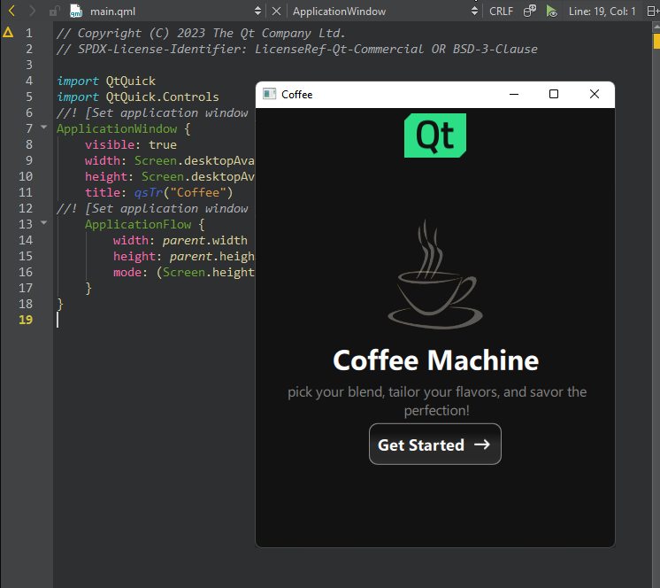
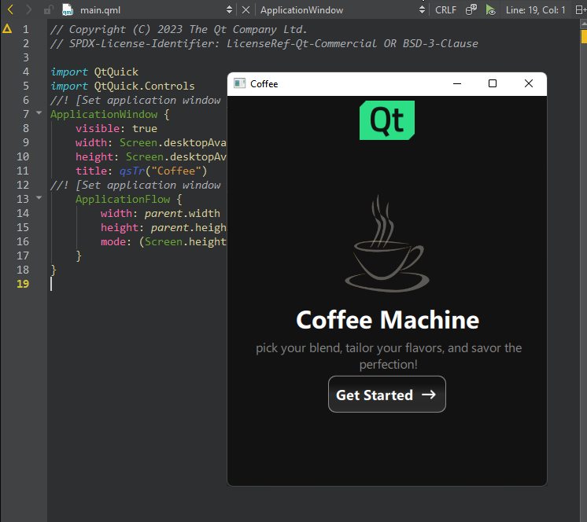

Previewing on Desktop
To preview the currently active QML file on the desktop:
- Select
 (Live Preview) on the editor toolbar.
(Live Preview) on the editor toolbar.
- Select Build > QML Preview.
To preview the currently active QML file on the desktop:
(Live Preview) on the editor toolbar.